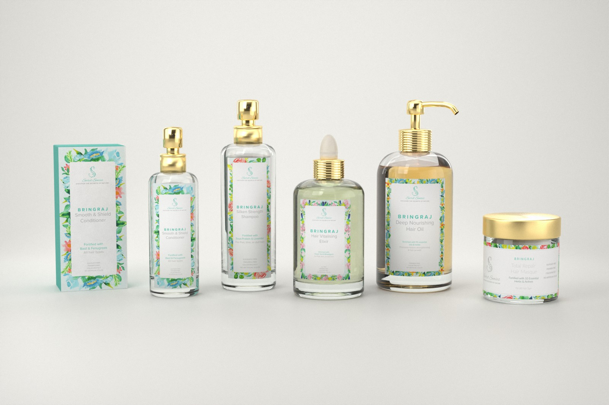
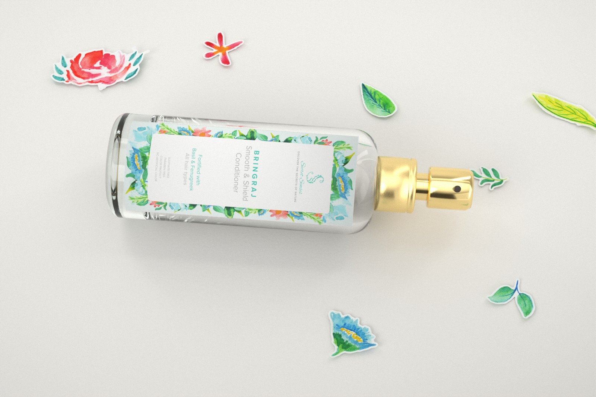

Study 64 · 2 November 2026
Secret Senses, materiality
One material step at a time. Tell me where it starts to feel real.


All of it, on every shot




Study 64 · 2 November 2026
One material step at a time. Tell me where it starts to feel real.

